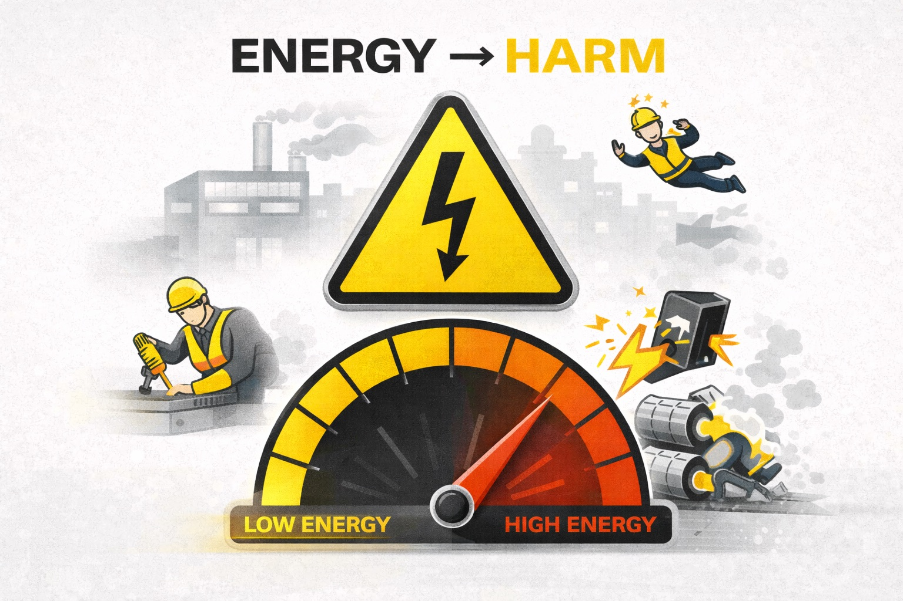
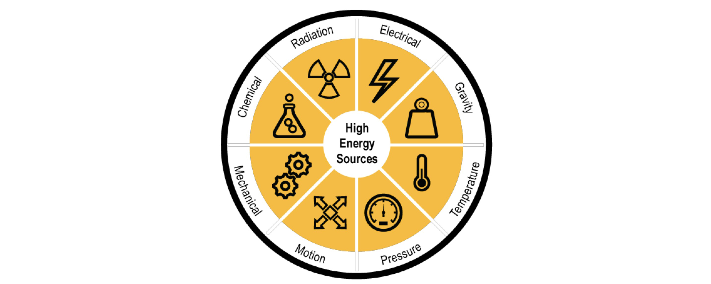
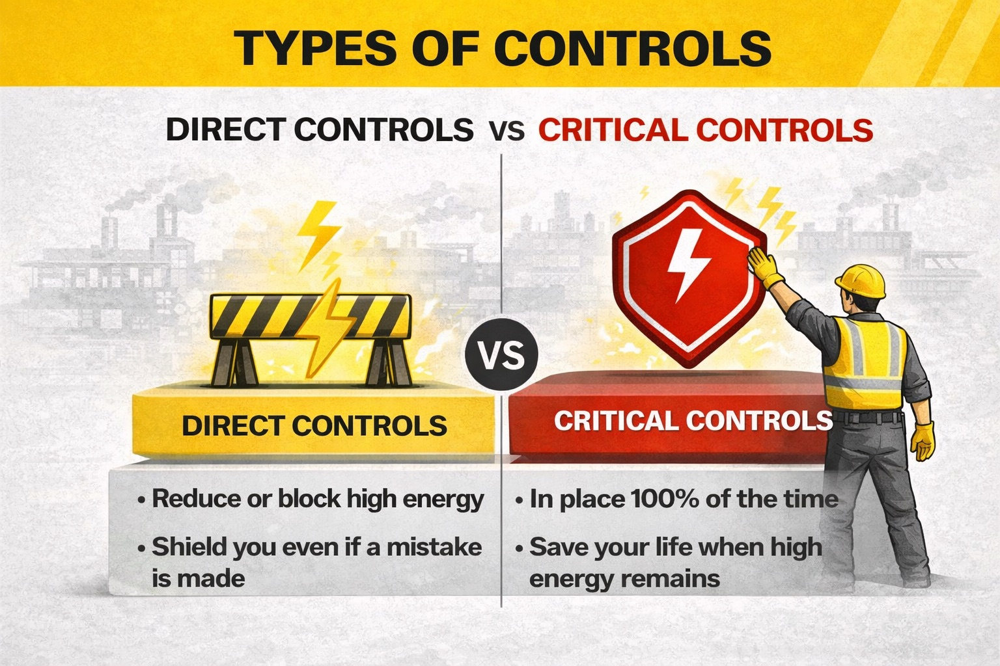
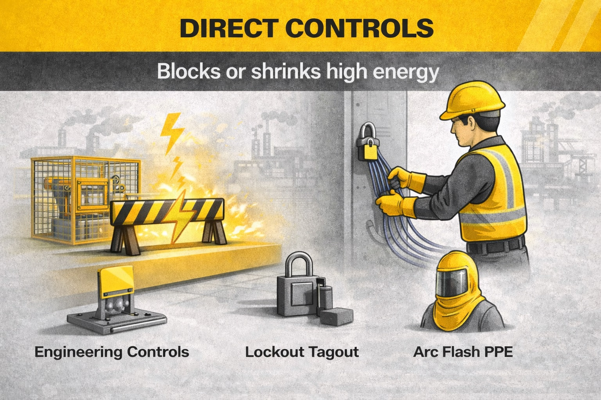
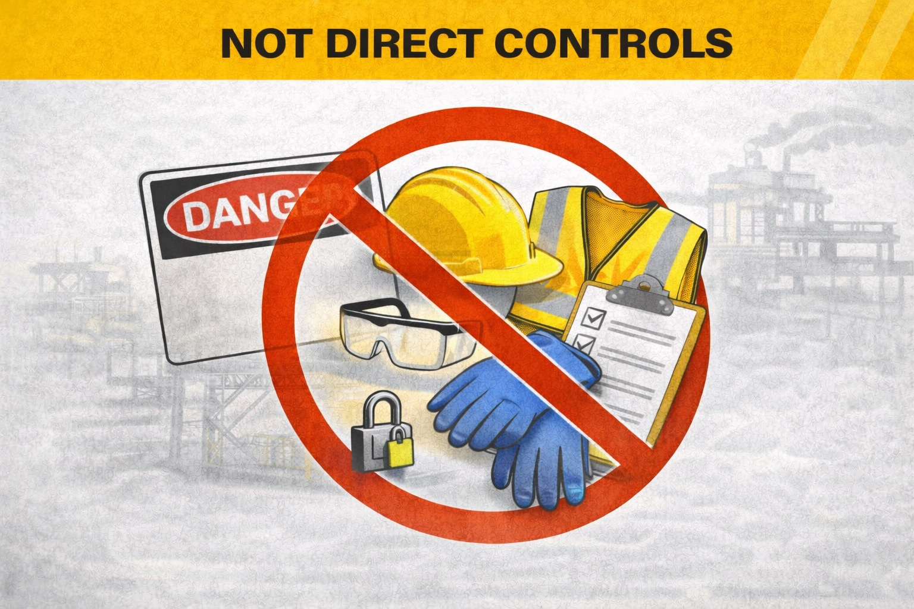
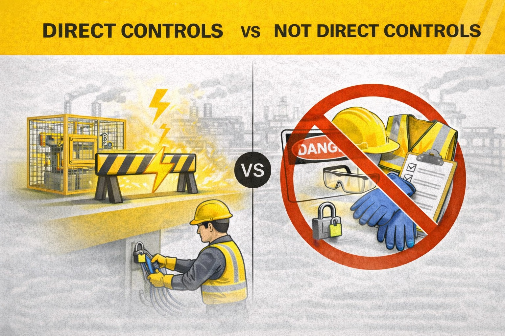
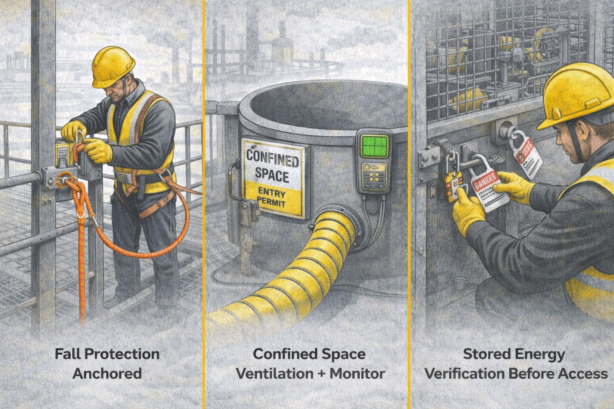
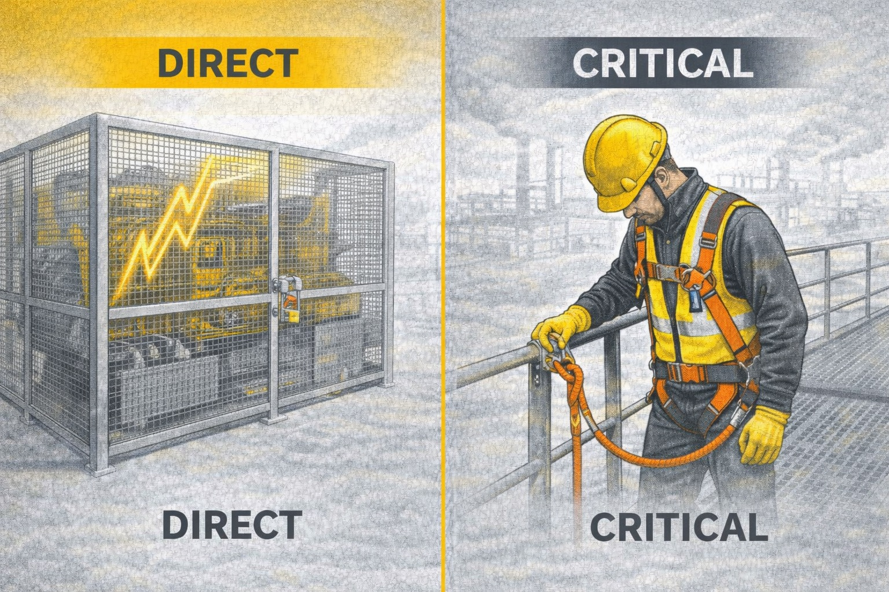
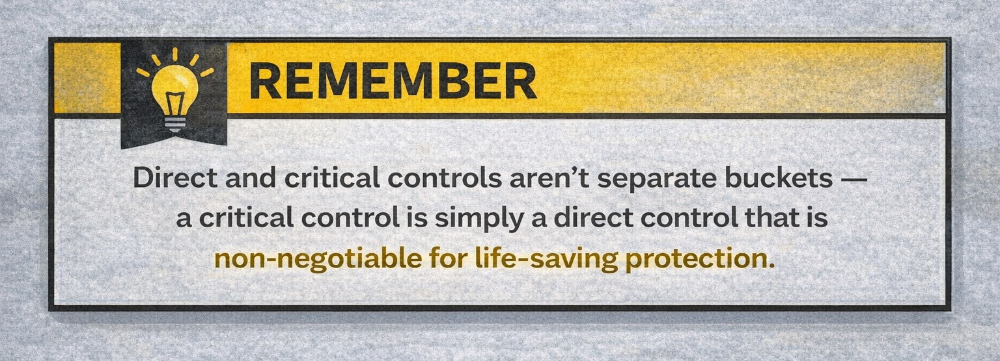

Welcome
Finish the training, then you’ll unlock the game.
This module explains direct controls, critical controls, and how they work to prevent significant injuries. Move through each slide and acknowledge the last screen to play the game.
Energy → Harm
The more energy involved, the more serious the injury when things go wrong.
When do injuries become serious?
- When energy is high (falls, moving equipment, electrical, pressure)
- When mistakes meet exposure
- When no protections are blocking the energy
We prevent serious injuries by blocking, lowering, or preparing for high energy — not by trying harder.
These preventative acts are the "controls" we're going to learn about.

High Energy Sources
There are many different sources of high energy and the potential for significant injury or fatality from it.
- Electrical – shock and burn potential
- Gravity – falling
- Temperature – burns, hypothermia
- Pressure – explosion, implosion
- Motion – the faster the movement, the greater the damage potential
- Mechanical – like rotating machinery, etc.
- Chemical – burns, corrosive
- Radiation – poisoning, cancer potential
When a process becomes high energy, the most likely incident is a SIF.

There are two types of controls that matter most for preventing serious injuries and fatalities (SIFs).
-
Direct Controls
Reduce or block high energy so the most likely outcome is not serious injury — even if someone slips up.
-
Critical Controls
Must be in place 100% of the time to save your life when high energy is still present.
If it doesn’t reduce energy or save your life — it might help, but it won’t stop a SIF.

Direct Controls
Preventive actions or implements that are targeted against high energy: machine guarding, spotters, directing traffic, high-energy-targeted PPE, etc.
A direct control is present when all three of these are true:
- it's specifically targeted to the high-energy source
- it effectively mitigates exposure to the high energy source (when installed, verified, and used properly)
- it is effective even if a human makes a mistake during the work period (unrelated to the installation of the control)
Examples of Direct Controls:
- Machine guarding
- Hard physical barriers
- Interlocks
- Light curtains
- Laser scanners
- Machine guarding
- Lockout/Tagout
- Fall protection

Hierarchy of Direct Controls
Direct controls are not all created equal. The less a direct control relies on an operator's actions, and the more the control is designed into the workplace, the less there is a chance for a SIF.
For example, if you take someone working high off the ground, and take that workspace to a lower area, you've eliminated (or substituted) the high energy fall potential. Elimination/Substitution is the best way to reduce high energy—just get rid of the high energy entirely. That's why it's at the top of the chart below.
But elimination isn't always possible. Sometimes high energy work can't be removed. Then, we try to engineer the workplace to limit the exposure to the high energy. Solutions could include machine guarding, hard barriers, or light curtains.
Beyond that are Targeted Administrative and Targeted PPE. These aim for the high energy sources and include things like lockout/tagout, confined space entry, and fall protection. While these are considered direct controls, the potential negative of these is they introduce more opportunity for human error.

What Direct Controls Aren't
General PPE and Administrative are not direct controls. They should be used appropriately and not relied on where a stronger control is available.
General PPE includes:
- Safety glasses
- Safety shoes
- Bump caps
- Hearing protection
Administrative includes:
- Training
- Signs
- Procedures
- Rules
- Communications

PPE: When It Is (and Isn't) Direct
Wearing PPE correctly can be a direct control (e.g., wearing fall protection when working at height). But PPE alone may not be sufficient if an engineering control could remove the hazard.

Critical Controls
Critical controls are measures that, if not implemented, greatly increase the chance of a severe incident (e.g., fall-arrest anchorage, energy isolation for repairs).

Direct vs. Critical Controls
Direct controls can reduce risk immediately; critical controls are those that must be in place because failure can lead to catastrophic outcomes. Use the strongest control available and ensure critical controls are never skipped.
Important to note: A critical control can also be a direct control, and often is, but not always. For instance:
- Gas monitoring in a confined space detects gas, but doesn't prevent entry. But without it, workers could die.
- Inspection of a crane is administrative/procedural and doesn't prevent use, but without it could lead to dropped loads.
Whether a control is direct, critical, or both, they are all important parts of protecting your coworkers and you from significant injury or death.

